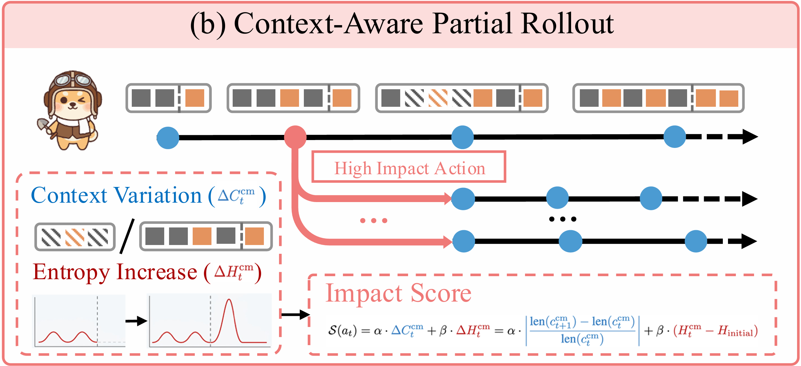
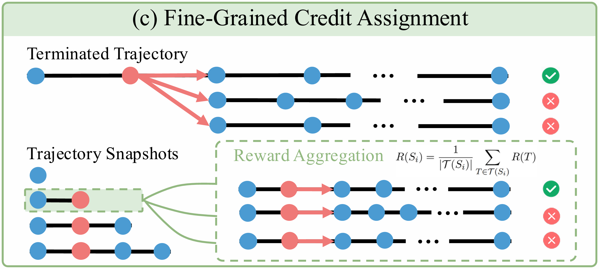

01
Planning
Form a search strategy, revise it after new evidence, and keep the next action deliberate.
plan · analyzeText
Context management for long-horizon agents
ContextPilot gives language models a disciplined way to plan, retrieve, remember, and offload—so they can navigate long documents without letting the working context drift out of control.
A context control plane
ContextPilot turns context management into explicit, inspectable actions. The model can gather evidence without carrying every intermediate result all the way to the answer.
Form a search strategy, revise it after new evidence, and keep the next action deliberate.
plan · analyzeText
Index once, search precisely, then open only the chunks needed to verify the answer.
searchEngine · readChunk
Save durable facts with their relationships and retrieve them when final reasoning needs them.
memorize · updateMemory
Delete noise, truncate bulky observations, or compress useful spans into a smaller working set.
delete · truncate · compress
Interactive execution trace
Step through an illustrative local trace. No model endpoint, document upload, or API key is used in this browser demo.
Trained where choices matter
The RL pipeline focuses exploration on context-editing decisions and uses downstream outcomes to train the intermediate states that produced them.
Branch around pivotal context edits instead of exploring every action uniformly across the trajectory.

Propagate downstream rewards to the context snapshots that shaped each outcome along the trajectory.

Evaluation suite
Run the full pipeline across long-book comprehension, narrative QA, conversational memory, and deep web search—or launch one task at a time.
# Install the inference environment
bash infer/scripts/setup_environment.sh
source infer/.venv/bin/activate
# Evaluate all four tasks
bash infer/scripts/run_full_pipeline.sh \
/path/to/checkpoint my-runOpen source